In UMAPs and clustering you turned a single-cell dataset into clusters — groups of cells that look alike. But a cluster is just a number (“cluster 3”). The biology question is: cluster 3 is which cell type?
A cluster is a cloud of cells in gene space; annotation asks what that cloud is.
Marker genes: the genes a cluster switches on that the others do not — found by differential expression (DE) of each cluster against the rest.
Two routes to a label: manual (match markers to known cell-type signatures) and reference-based (let a labelled dataset vote).
The honest caveats: ambiguous clusters, doublets, and continuous states that resist discrete labels.
The maths underneath is the same as before: cells are vectors, a cluster mean is a centroid, and a marker is a coordinate where two groups of vectors differ.
A biology picture first
You dissociate a piece of tissue — say a tumour biopsy — into single cells, sequence them, and cluster. The UMAP shows a dozen blobs.
One blob is probably T cells, another macrophages, another tumour epithelium — but the algorithm does not know that. It only knows “these cells are similar.”
To use the experiment — “how many T cells infiltrated the tumour?”, “which cluster is proliferating?” — every blob needs a name.
Immunologists already know that T cells express CD3D, B cells express MS4A1 (CD20), macrophages express CD68. That prior knowledge is what we exploit.
Annotation is the bridge from clusters the computer found to cell types the biologist recognises.
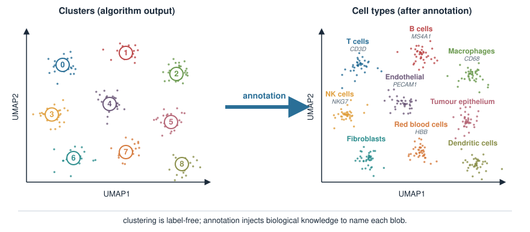
What a cluster is, in vector terms
From PCA and clustering: each cell is a vector of measured genes,
A cluster is a set of these vectors that sit close together — a cloud in \(G\)-dimensional gene space.
Its mean vector (the average over cells in the cluster) is the cluster centroid — the “typical expression profile” of that cell type.
Annotation compares centroids: which genes is this cluster’s centroid high in, relative to the others?
So the question “what is cluster 3?” becomes “on which gene coordinates does cluster 3’s centroid stick out?”
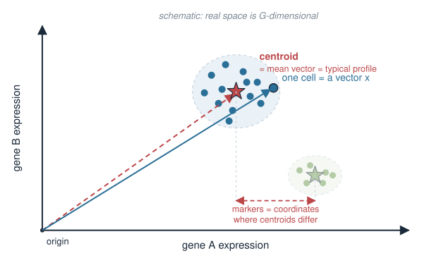
Marker genes: the core idea
A marker gene for a cluster is a gene that is expressed much more highly in that cluster than in the rest of the cells.
Markers are how we recognise a type: high CD3D → T cell, high MS4A1 → B cell, high HBB → red blood cell.
Good markers are specific (on in one cluster, off elsewhere) and sensitive (on in most cells of that cluster).
We do not pick markers by eye across thousands of genes — we rank genes by how strongly they separate the cluster from everything else.
That ranking is a differential expression problem: for each gene, compare its expression inside the cluster to outside.
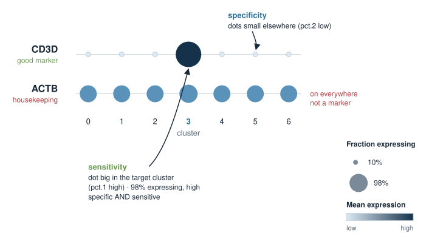
Differential expression: one cluster vs the rest
To find markers for cluster \(k\), split the cells into two groups and test every gene:
Group 1: the cells in cluster \(k\).
Group 2: all other cells (the “rest”).
This is the one-vs-rest comparison. For each gene we ask: is its expression distribution different between the two groups, and by how much?
Two numbers summarise each gene:
a log fold change — how many-fold higher (or lower) the mean is in group 1 vs group 2, on a \(\log_2\) scale;
a p-value — is the difference bigger than we would expect by chance?
Repeat for every cluster and you have candidate markers for all of them.
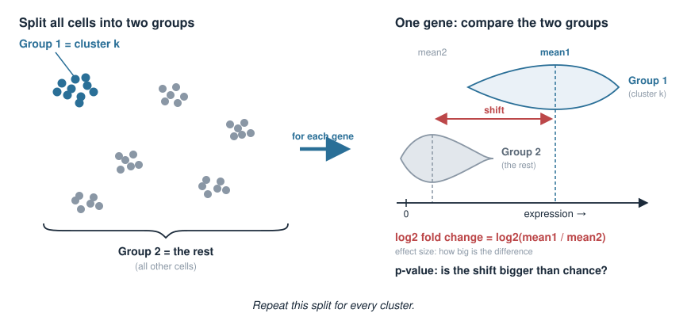
The statistic under the hood
For a single gene, we are comparing two sets of numbers (its expression in group 1 vs group 2). The default test in single-cell tools is the Wilcoxon rank-sum test:
rank all the cells by that gene’s expression, then ask whether group-1 cells sit systematically higher in the ranking;
it is non-parametric — it does not assume the counts are Gaussian, which matters because single-cell counts are sparse and skewed (recall the negative-binomial / overdispersion story for count data).
The log fold change is the effect size:
\[\text{log}_2\text{FC} = \log_2\frac{\text{mean expression in group 1}}{\text{mean expression in group 2}}.\]
A large positive \(\log_2\)FC and a small p-value together flag a marker.
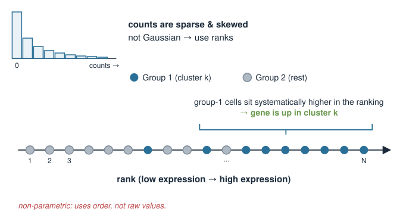
Reading a marker table (FindMarkers-style)
In practice you run a one-vs-rest scan across all clusters. A typical call (Seurat):
# cells already clustered; identities set to cluster labelsmarkers <-FindAllMarkers( seurat_obj,only.pos =TRUE, # keep genes UP in each cluster (candidate markers)min.pct =0.25, # gene must be detected in >=25% of one grouplogfc.threshold =0.25# require at least this log2 fold change)
This returns one row per (gene, cluster) that passes the filters. The columns are the quantities from the last two slides.
CD3D: high fold change, on in 98% of the cluster, off (5%) elsewhere → a textbook T-cell marker.
From markers to a label: the manual workflow
The classic annotation loop, cluster by cluster:
Find markers — one-vs-rest DE for each cluster (previous slides).
Compare to known markers — look the top genes up against curated cell-type signatures (CellMarker, PanglaoDB, or the lab’s own list).
Label the cluster with the best-matching type; sanity-check on the UMAP.
top <-head(markers[markers$cluster ==3, ], 10)$genetop # "CD3D" "CD3E" "IL7R" "CD2" "CD3G" ... -> T cellsseurat_obj <-RenameIdents(seurat_obj, `3`="T cell")
Repeat for every cluster until the whole UMAP is named.
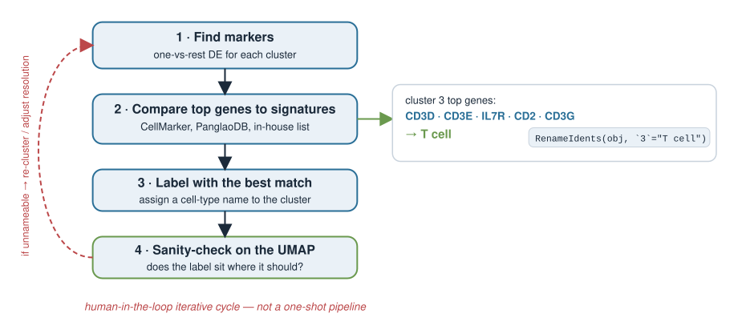
Known cell-type signatures
A signature is a small set of genes expected to be high in a given type. Matching a cluster’s markers to signatures is the manual annotator’s dictionary.
Cell type
Canonical markers
T cell
CD3D, CD3E, CD2
B cell
MS4A1 (CD20), CD79A
Macrophage / monocyte
CD68, LYZ, CD14
NK cell
NKG7, GNLY
Endothelial
PECAM1 (CD31), VWF
Red blood cell
HBB, HBA1
Instead of eyeballing one gene, you can score each cell for a whole signature (mean expression of the set) and see which cluster lights up.
A signature is a direction in gene space; scoring a cell is essentially a dot product of its expression with the signature.
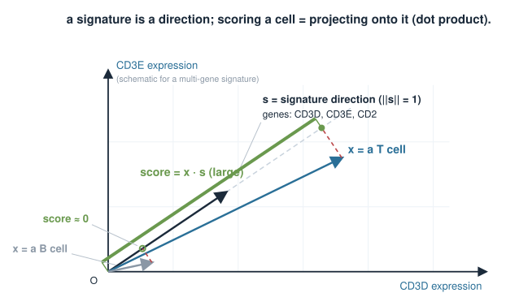
Reference-based annotation
Instead of curating markers by hand, borrow labels from an already-annotated dataset (a reference atlas).
Each reference cell type has a known expression profile (a centroid, or many labelled cells).
For each query cell (yours), find which reference profile it most resembles, and copy that label.
“Resembles” is a similarity measure — typically correlation between the query cell’s expression vector and each reference profile.
Tools: SingleR (correlation to reference profiles), Azimuth (mapping onto a reference atlas), CellTypist (a trained classifier). All answer the same question: which reference does this cell look like?
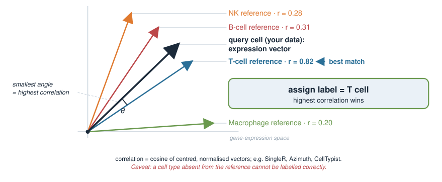
Manual vs reference-based
Manual (markers)
Reference-based
Input
curated marker lists
a labelled reference dataset
Granularity
your choice, cluster-level
as fine as the reference
Strength
transparent, uses expert knowledge
fast, consistent, per-cell
Weakness
slow, subjective, needs expertise
only as good as the reference; misses novel types
Best for
new/unusual tissue, discovery
well-studied tissue (blood, common atlases)
In practice you combine them: reference-based for a fast first pass, manual markers to confirm, refine, and catch anything the reference lacks.
Caveat: ambiguous clusters
Not every cluster names cleanly.
No clear markers — a cluster’s top DE genes are weak or generic (ribosomal, mitochondrial). Often low-quality cells or a clustering artefact.
Mixed markers — one cluster shows both T-cell (CD3D) and myeloid (LYZ) markers. Real biology? A doublet cluster? Under-clustering?
Resolution — turning the clustering resolution up may split a vague blob into two clean types; too high and you over-split one type into noise.
Annotation and clustering are iterative: an unnameable cluster is a signal to re-cluster, adjust resolution, or check quality control.
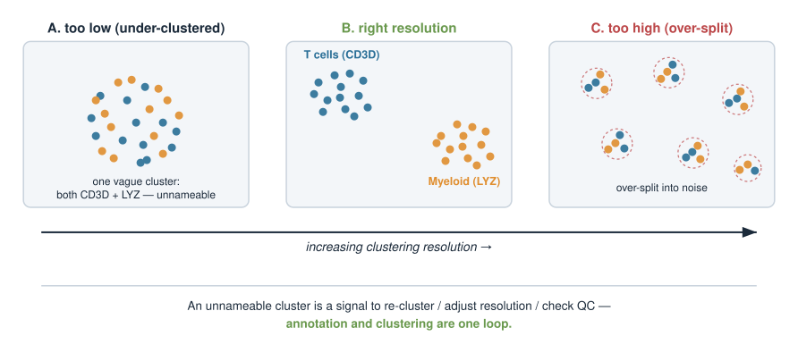
Caveat: doublets
A doublet is two cells captured in one droplet and sequenced as if they were one “cell.”
Its expression profile is a sum of two types → it shows both sets of markers (e.g. T-cell and B-cell genes).
Doublets can form their own small cluster that looks like a fake “hybrid” cell type — a classic annotation trap.
Detect them with dedicated tools (scDblFinder, DoubletFinder) that flag cells looking like blends of two profiles, then remove them before finalising annotation.
A “cell type” that co-expresses two lineages’ exclusive markers should raise a doublet suspicion first.
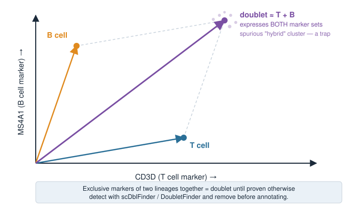
Caveat: continuous states vs discrete types
We label clusters as if cell identity were discrete boxes. Biology is often a continuum.
Differentiation: stem → progenitor → mature is a smooth trajectory; any cut into “types” is partly arbitrary.
Activation states: a resting vs activated T cell is the same type in a different state, not two types.
Cell cycle: proliferating cells shift along a cycle axis — a continuous state that can even drive spurious clusters (revisited in Cell-cycle analysis).
Clustering discretises a continuum. Sometimes that is fine (blood has fairly distinct types); sometimes a trajectory / pseudotime view is truer than any set of labels.
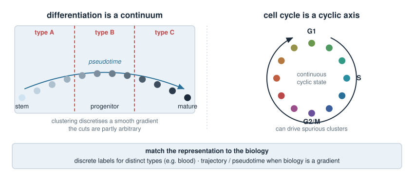
Tying it back: DE is comparing groups of vectors
Everything today is the course’s linear-algebra and statistics, reused:
A cell is a vector of gene expression; a cluster is a cloud of such vectors (UMAPs and clustering, PCA).
A cluster centroid is the mean vector — the typical profile of a type.
A marker gene is a coordinate where one cluster’s centroid stands far from the rest.
Differential expression is a two-group comparison per coordinate — effect size (log fold change = difference of log means) plus significance (a rank test), with multiple-testing correction because there are ~20 000 coordinates.
A signature score is a dot product of a cell with a cell-type direction; reference mapping is correlation to reference profiles.
No new mathematics — a new application of vectors, means, and hypothesis tests.
Summary
Idea
Key point
Clusters vs types
clustering groups cells; annotation names the groups
Marker gene
gene high in one cluster, low elsewhere (specific + sensitive)
Differential expression
one-vs-rest per gene: log fold change and adjusted p-value